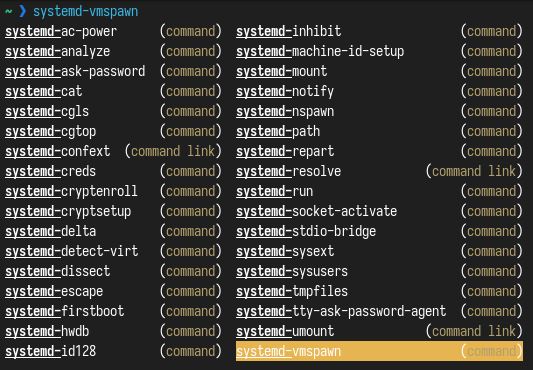
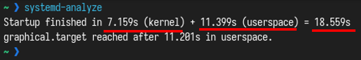
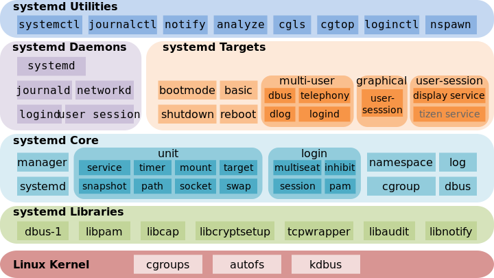
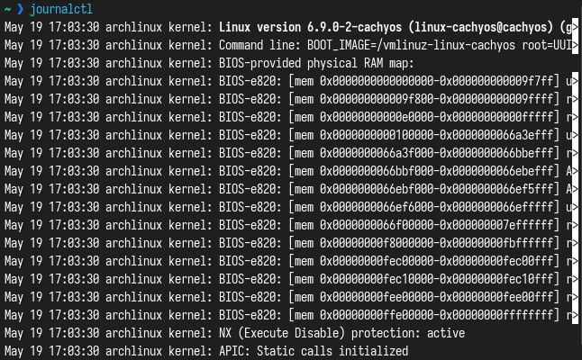
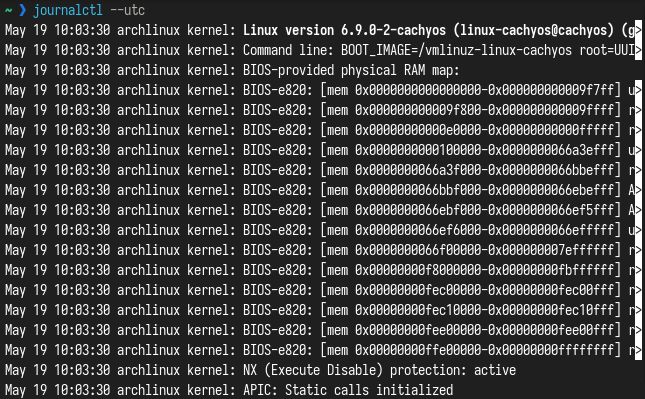
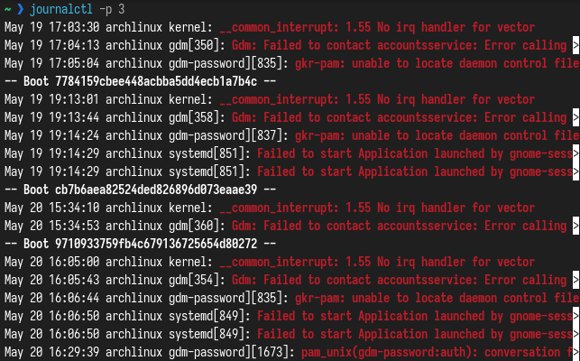

Кто бы что не говорил, но система systemD была и остается стандартом систем инициализацией в линуксе №1. И со 100% вероятностью все сервера, которые реально встречаются, будут с systemD. И поэтому знать как работать с данной системой инициализации должен знать каждый сисадмин и просто программист.
В этой статье мы разберем создание сервисов и юнитов, как облегчить работу при помощи systemd, отслеживать состояние системы и управлять системой.
Systemd – менеджер системы и сервисов в операционной системе Linux. При разработке eго стремились спроектировать обратно совместимым со скриптами инициализации SysV init и предоставить полезные функции, такие, как параллельный запуск системных сервисов во время загрузки, активацию демонов по требованию, поддержку снепшотов состояния системы и логику управления сервисами, основанную на зависимостях.
SystemD был создан для централизации линукса, и я думаю, это пошло линуксу на пользу. Ведь так стало намного легче администрировать и настраивать сервера. А вы представьте, какой хаос творился бы, если на одном дистрибутиве стоял OpenRC, на другом runit, а не третьем sinit?
Можно долго обсуждать и мусолить тему systemD, но факт остается фактом — эта самая распространенная и популярная система инициализации.
Итак, вот вы находитесь в терминале. Мерцающая белая строка на черном фоне. Давайте начнем с малого — а именно загрузки системы.
Итак, перед появлением рабочего стола происходит следующий алгоритм:
Мы будем обсуждать предпоследний момент, в частности — систему инициализации. В Linux после загрузки ядра начинается загрузка сервисов, системы, юнитов и других компонентов. За это отвечает специальный процесс с PID 1, который называется "init process" или "процесс инициализации". Он запускается сразу после запуска ядра и завершается с последним "вздохом" системы.
Вообще, systemD — это не только один процесс. Systemd — подсистема инициализации и управления службами в Linux, фактически вытеснившая в 2010-е годы традиционную подсистему init. Основная особенность — интенсивное распараллеливание запуска служб в процессе загрузки системы, что позволяет существенно ускорить запуск операционной системы. А также это многие другие сервисы, программы и службы для управления системой.

Сюда входит и systemd-resolve (определяет режим работы автоматически в зависимости от того, является ли /etc/resolv.conf символической ссылкой на файл заглушки или содержит адреса серверов), и systemctl (утилита для управления через командную строку) и многие другие. Из-за этого, кстати, многие считают что systemD перегружен.
Давайте поговорим об истории создания и популяризации systemd в линуксе.
14 лет назад, в далеком 2010 году systemd был разработан Ленартом Поттерингом. Вообще, он довольно известный программист, приложил свою руку к созданию Avahi и PulseAudio. Когда-то работал в Red Hat, но после уволился и перешел в Microsoft.
Эта система инициализации устроила революцию в мире линукса. Сколько жарких споров и холиваров было разведено...
В издании UNIX от 1979 года задач у init — процесса с PID 1 — два, это выполнить при старте /etc/rc и создать процессы getty и login. Позже, по мере развития линукса, к задачам стали прибавляться все новые и новые. И в конце концов осталась одна основная задача инициализатора — привести систему в полную готовность к работе, запустить базовые процессы и пользовательское пространство.
Но время неумолимо двигалось вперед. Теперь стали появляться сервисы, с множествами юнитами и скриптами, и при помощи старой SysV init стало неудобно управлять системой. Сервисы в SysV запускались последовательно, так что если захочется контролировать время запуска одного сервиса — придется контролировать все сервисы. А также это было просто медленно. Зависимости между сервисами в SysV были сложными.
Также SysV просто запускал и отключал сервисы, он не имел ни контроля ресурсов, не журналирования, не управления сетью. Также SysV имел множество разрозненных утилит, в отличии от systemD.
И под конец — SysV имел проблемы с надежностью и безопасностью. Пример ненадежности — это небезопасное выключение системы. SysVinit полагается исключительно на загрузочные скрипты, чтобы отмонтировать файловые системы и остановить процессы. Это крайне небезопасно и может вылиться в потерю данных в худших случаях.
Кроме SysV был еще UpStart, разработанный Canonical. Его главная концепция — event-driven подход. Запуск системы — это событие, новое устройство — событие, запуск демона — событие. Процессы могли подписываться на события и запускаться только при явной необходимости. Upstart совместим с sysvinit-скриптами, благодаря этому он был быстро интегрирован во многие дистрибутивы Linux. Тем не менее, после того, как большинство дистрибутивов Linux по тем или иным причинам перешли на systemd, разработка сошла на нет: последний релиз был в 2014-м году, и сегодня Upstart используется только в Chrome OS.
После всего этого Ленарт в своем блоге опубликовал "переосмысление PID 1".
В этом сообщении были сказаны несколько основополагающих вещей современного systemD:
В то же время Поттеринг подчёркивает, что эти идеи не новые, и уже известна система с такими возможностями — launchd от Apple, система инициализации в macOS. launchd имеет схожие с Upstart event-driven идеи, но более того, он вобрал в себя задачи других системных сервисов, таких, как cron и inetd.
Другие возможности, которыми должен обладать хороший, по мнению Поттеринга, PID 1:
Подведем итог. После нескольких месяцев борьбы, дистрибутивы стали мало-помалу принимать systemd — Fedora, OpenSuSE. В августе 2012 года Arch Linux переключился также на systemd. Позже systemd начал проникать в другие дистрибутивы — Ubuntu, Debian (2015, в 8 версии). И так творение Поттеринга стало стандартом инициализации в линуксе.
Итак, вернемся к systemd.
Для анализа системы существует утилита systemd-analyze.
Итак, если вы запустите ее, то вы увидите следующее:

Как мы видим, за 7 секунд загрузилось ядро а за 11 секунд — пользовательское пространство. Всего система загрузилась за 18.5 секунд.
Если вам этого недостаточно, то можно использовать команду systemd-analyze blame, которая показывает также время запуска сервисов:
$ systemd-analyze blame
3.869s dev-sda2.device
2.288s NetworkManager.service
1.606s user@1000.service
1.467s systemd-tmpfiles-setup-dev-early.service
1.445s upower.service
1.215s systemd-udev-trigger.service
996ms systemd-journal-flush.service
996ms systemd-journald.service
919ms systemd-rfkill.service
900ms iio-sensor-proxy.service
769ms systemd-tmpfiles-setup.service
653ms systemd-logind.service
546ms accounts-daemon.service
518ms polkit.service
459ms systemd-udevd.service
445ms systemd-tmpfiles-clean.service
425ms systemd-userdbd.service
395ms udisks2.service
384ms systemd-timesyncd.service
# ...
Здесь мы можем увидеть каждый сервис, от Network Manager до демона логина. Это бывает очень полезно при оптимизации системы.
Затем мы также можем просмотреть дерево time-critical цепи для конкретной утилиты или вывести список указанных утилит с подкомандой critical-chain:
$ systemd-analyze critical-chain
The time when unit became active or started is printed after the "@" character.
The time the unit took to start is printed after the "+" character.
graphical.target @11.201s
└─multi-user.target @10.795s
└─systemd-user-sessions.service @10.647s +131ms
└─network.target @10.613s
└─NetworkManager.service @8.317s +2.288s
└─basic.target @8.189s
└─dbus-broker.service @7.896s +269ms
└─dbus.socket @7.867s
└─sysinit.target @7.799s
└─systemd-timesyncd.service @7.414s +384ms
└─systemd-tmpfiles-setup.service @6.604s +769ms
└─local-fs.target @6.553s
└─boot.mount @6.317s +233ms
└─dev-sda1.device @6.291s
Наконец, давайте рассмотрим еще одну важную подкоманду, которая позволяет создавать графически (svg-формат) детализированные системные службы, которые были запущены.
$ systemd-analyze plot > boot_analysis.svg
Также можно использовать systemd-analyze на удаленном сервере при помощи ssh:
systemd-analyze time -H <username>@<host>
systemd-analyze blame -H <username>@<host>
systemd-analyze critical-chain -H <username>@<host>
Утилита, для того чтобы узнать, подключены ли мы к внешнему источнику питания.
$ systemd-ac-power -v # получаем состояние батареи (подключена ли к источнику питания)
yes
$ systemd-ac-power -v --low # разряжена ли батарея
no
Системная утилита для запрашивания пароля через TTY или UI.
systemd-ask-password [OPTIONS...] MESSAGE
Query the user for a system passphrase, via the TTY or a UI agent.
-h --help Show this help
--icon=NAME Icon name
--id=ID Query identifier (e.g. "cryptsetup:/dev/sda5")
--keyname=NAME Kernel key name for caching passwords (e.g. "cryptsetup")
--credential=NAME
Credential name for ImportCredential=, LoadCredential= or
SetCredential= credentials
--timeout=SEC Timeout in seconds
--echo=yes|no|masked
Control whether to show password while typing (echo)
-e --echo Equivalent to --echo=yes
--emoji=yes|no|auto
Show a lock and key emoji
--no-tty Ask question via agent even on TTY
--accept-cached Accept cached passwords
--multiple List multiple passwords if available
--no-output Do not print password to standard output
-n Do not suffix password written to standard output with
newline
See the systemd-ask-password(1) man page for details.
Утилита для выполнения процессов с выводом stdout/stderr, подключенный к системному журналу.
systemd-cat [OPTIONS...] COMMAND ...
Execute process with stdout/stderr connected to the journal.
-h --help Show this help
--version Show package version
-t --identifier=STRING Set syslog identifier
-p --priority=PRIORITY Set priority value (0..7)
--stderr-priority=PRIORITY Set priority value (0..7) used for stderr
--level-prefix=BOOL Control whether level prefix shall be parsed
See the systemd-cat(1) man page for details.
Специальная команда, которая отвечает за файл /etc/resolv.conf. Разрешает доменные имена, адреса и т.д. При неправильном конфиге resolv'а вы не сможете работать в интернете.
systemd-resolve [OPTIONS...] HOSTNAME|ADDRESS...
systemd-resolve [OPTIONS...] --service [[NAME] TYPE] DOMAIN
systemd-resolve [OPTIONS...] --openpgp EMAIL@DOMAIN...
systemd-resolve [OPTIONS...] --statistics
systemd-resolve [OPTIONS...] --reset-statistics
Resolve domain names, IPv4 and IPv6 addresses, DNS records, and services.
-h --help Show this help
--version Show package version
--no-pager Do not pipe output into a pager
-4 Resolve IPv4 addresses
-6 Resolve IPv6 addresses
-i --interface=INTERFACE Look on interface
-p --protocol=PROTO|help Look via protocol
-t --type=TYPE|help Query RR with DNS type
-c --class=CLASS|help Query RR with DNS class
--service Resolve service (SRV)
--service-address=BOOL Resolve address for services (default: yes)
--service-txt=BOOL Resolve TXT records for services (default: yes)
--openpgp Query OpenPGP public key
--tlsa Query TLS public key
--cname=BOOL Follow CNAME redirects (default: yes)
--search=BOOL Use search domains for single-label names
(default: yes)
--raw[=payload|packet] Dump the answer as binary data
--legend=BOOL Print headers and additional info (default: yes)
--statistics Show resolver statistics
--reset-statistics Reset resolver statistics
--status Show link and server status
--flush-caches Flush all local DNS caches
--reset-server-features
Forget learnt DNS server feature levels
--set-dns=SERVER Set per-interface DNS server address
--set-domain=DOMAIN Set per-interface search domain
--set-llmnr=MODE Set per-interface LLMNR mode
--set-mdns=MODE Set per-interface MulticastDNS mode
--set-dnsovertls=MODE Set per-interface DNS-over-TLS mode
--set-dnssec=MODE Set per-interface DNSSEC mode
--set-nta=DOMAIN Set per-interface DNSSEC NTA
--revert Revert per-interface configuration
See the resolvectl(1) man page for details.
Другие команды и ссылки на команды вы можете видеть ниже. Для просмотра справки запустите с флагом --help или посмотрите страницу мануалов (man)

systemd — набор базовых компонентов Linux-системы. Представляет собой менеджер системы и служб, который выполняется как процесс с PID 1 и запускает остальную часть системы. Основная особенность — интенсивное распараллеливание запуска служб в процессе загрузки системы, что позволяет существенно ускорить запуск операционной системы.
А также systemD очень разросся — он отвечает за несколько базовых вещей — интернет, ядро, журналирование и многое другое.

Systemd приносит концепцию юнитов systemd. Юниты — это некая абстракция, она содержит имя, зависимости, команды, описание, права. Юниты представлены конфигурационными файлами, размещенными в одной из директорий:
Конфигурационные файлы похожи на ini-файлы:
[Unit]
Description=Refresh existing PGP keys of archlinux-keyring regularly
[Timer]
OnCalendar=weekly
Persistent=true
RandomizedDelaySec=1week
То есть имеются заголовки и параметры. Этот формат очень легкий, понятный.
Юниты делятся на 13 типов, вкратце:
Каждый юнит имеет зависимости, то есть таймер от таргета или наоборот.
Во время загрузки systemd прослушивает сокеты для всех системных сервисов, поддерживает этот тип активации и передает сокеты этим сервисам сразу после старта сервисов. Это позволяет нашей системе инициализации не только запускать сервисы параллельно, но также дает возможность перезапускать сервисы без потери любых отправленных им сообщений, пока сервисы были недоступны. Соответствующий сокет остается доступным и все сообщения выстраиваются в очередь.
Системные сервисы, использующие D–Bus для межпроцессного взаимодействия, могут быть запущены по требованию, когда клиентское приложение пытается связаться с ними.
Системные сервисы, поддерживающие активацию, основанную на устройствах, могут быть запущены, когда определенный тип оборудования подключается или становится доступным.
Системные сервисы могут поддерживать этот вид активации, если изменяется состояние папки или директории.
Система может сохранять состояние всех юнитов и восстанавливать предыдущее состояние системы.
Systemd отслеживает и управляет точками монтирования и автомонтирования.
Агрессивная параллелизация Systemd запускает системные сервисы параллельно из-за использования активации, основанной на сокетах. В комбинации с сервисами, поддерживающими активацию по требованию, параллельная активация значительно уменьшает время загрузки системы.
До активации и деактивации юнитов systemd вычисляет их зависимости, создает временную транзакцию и проверяет целостность этой транзакции. Если транзакция не целостная, systemd автоматически пытается исправить ее и удалить не требующиеся задания из нее до формирования сообщения об ошибке.
SystemD полностью поддерживает скрипты инициализации SysV, как описано в спецификации Linux Standard Base (LSB), что упрощает переход на systemd.
По способу использования сервисные юниты .service напоминают скрипты инициализации. Для просмотра, старта, остановки, перезагрузки, включения или выключения системных сервисов используется команда systemctl. Команды service и chkconfig по-прежнему включены в систему, но только по соображениям совместимости. Пожалуй, одна из самых популярных частей systemd. В journalctl можно посмотреть всё, что произошло с системой: логи sshd, логи ядра и его драйверов, сообщения о крахах, и многое другое.
Одна из самых важных частей любого администрирования сервера — это просмотр логов. И специально для этого существует демон journald и утилита journalctl. В журнал system собираются все системные сообщения — от ядра, служб, демонов, приложений. Логирование от systemd может использоваться вместе с syslog, либо использоваться вместо него.
Как я уже сказал, для просмотра логов есть утилита journalctl.
Итак, перед началом надо напомнить, что такое syslog. Долгое время важным компонентом любого дистрибутива Linux был демон syslog. На протяжении истории было сделано множество реализаций интерфейса syslog, но в целом они были реализованы схожим образом и использовали почти один формат данных на файловой системе.
Целью демона syslog является, как понятно из названия, логирование процессов системы. Демон получает от приложений и сервисов сообщения в относительно свободной форме и сохраняет их на диске. Как правило, единственные метаданные сообщения — это facility (примеры: ядро, почта, сеть, и т.д.) и приоритет, а также timestamp, тег процесса и его PID. Большинство этих полей опционально, и точный синтаксис варьируется от реализации к реализации.
Все файлы журналов, можно отнести к одной из следующих категорий:
Большинство же лог файлов содержится в директории /var/log.
Поддерживаемые уровни журналирования (приоритеты) в syslog:
emerg — система неиспользуемая
alert — действие должно быть произведено немедленно
crit — условия критичности
err — условия ошибок
warn — условия предупреждений
notice — обычные, но значимые условия
info — информационный
debug — отладочные сообщения
$ sudo dmesg -l warn
[ 0.460817] mtrr: your CPUs had inconsistent variable MTRR settings
[ 1.666251] amd_pstate: the _CPC object is not present in SBIOS or ACPI disabled
[ 3.087444] i8042: PNP: PS/2 appears to have AUX port disabled, if this is incorrect please boot with i8042.nopnp
Также одной из проблем syslog является то, что любой процесс может выдать себя за другой, и syslog не будет ничего проверять. Вторая проблема — нет единого формата записи данных. Анализаторам логов очень тяжело парсить данные логов. Третья проблема — сетевой протокол syslog слишком простой и ограниченный. Четвертая — контроля доступа нет, то есть либо полный доступ, либо полный запрет на чтение логов пользователем. Ну и множество других проблем, которые заставили syslog отойти на второй план.
Сейчас практически на всех серверах используют именно journald из systemd. Сообщения проходят аутентификацию, сетевой протокол сделан качественно. То есть сама цель journald — объеденить все технологии журналирования, чтобы не было разрозненных данных
Journalctl — это утилита из состава systemd, отвечающая за работу с журналами и демоном journald.
journalctl [OPTIONS...] [MATCHES...]
Query the journal.
Source Options:
--system Show the system journal
--user Show the user journal for the current user
-M --machine=CONTAINER Operate on local container
-m --merge Show entries from all available journals
-D --directory=PATH Show journal files from directory
--file=PATH Show journal file
--root=PATH Operate on an alternate filesystem root
--image=PATH Operate on disk image as filesystem root
--image-policy=POLICY Specify disk image dissection policy
--namespace=NAMESPACE Show journal data from specified journal namespace
Filtering Options:
-S --since=DATE Show entries not older than the specified date
-U --until=DATE Show entries not newer than the specified date
-c --cursor=CURSOR Show entries starting at the specified cursor
--after-cursor=CURSOR Show entries after the specified cursor
--cursor-file=FILE Show entries after cursor in FILE and update FILE
-b --boot[=ID] Show current boot or the specified boot
-u --unit=UNIT Show logs from the specified unit
--user-unit=UNIT Show logs from the specified user unit
-t --identifier=STRING Show entries with the specified syslog identifier
-p --priority=RANGE Show entries within the specified priority range
--facility=FACILITY... Show entries with the specified facilities
-g --grep=PATTERN Show entries with MESSAGE matching PATTERN
--case-sensitive[=BOOL] Force case sensitive or insensitive matching
-k --dmesg Show kernel message log from the current boot
Output Control Options:
-o --output=STRING Change journal output mode (short, short-precise,
short-iso, short-iso-precise, short-full,
short-monotonic, short-unix, verbose, export,
json, json-pretty, json-sse, json-seq, cat,
with-unit)
--output-fields=LIST Select fields to print in verbose/export/json modes
-n --lines[=[+]INTEGER] Number of journal entries to show
-r --reverse Show the newest entries first
--show-cursor Print the cursor after all the entries
--utc Express time in Coordinated Universal Time (UTC)
-x --catalog Add message explanations where available
--no-hostname Suppress output of hostname field
--no-full Ellipsize fields
-a --all Show all fields, including long and unprintable
-f --follow Follow the journal
--no-tail Show all lines, even in follow mode
--truncate-newline Truncate entries by first newline character
-q --quiet Do not show info messages and privilege warning
Pager Control Options:
--no-pager Do not pipe output into a pager
-e --pager-end Immediately jump to the end in the pager
Forward Secure Sealing (FSS) Options:
--interval=TIME Time interval for changing the FSS sealing key
--verify-key=KEY Specify FSS verification key
--force Override of the FSS key pair with --setup-keys
Commands:
-h --help Show this help text
--version Show package version
-N --fields List all field names currently used
-F --field=FIELD List all values that a specified field takes
--list-boots Show terse information about recorded boots
--disk-usage Show total disk usage of all journal files
--vacuum-size=BYTES Reduce disk usage below specified size
--vacuum-files=INT Leave only the specified number of journal files
--vacuum-time=TIME Remove journal files older than specified time
--verify Verify journal file consistency
--sync Synchronize unwritten journal messages to disk
--relinquish-var Stop logging to disk, log to temporary file system
--smart-relinquish-var Similar, but NOP if log directory is on root mount
--flush Flush all journal data from /run into /var
--rotate Request immediate rotation of the journal files
--header Show journal header information
--list-catalog Show all message IDs in the catalog
--dump-catalog Show entries in the message catalog
--update-catalog Update the message catalog database
--setup-keys Generate a new FSS key pair
See the journalctl(1) man page for details
Journalctl — отличный инструмент для анализа логов, обычно один из первых с которым знакомятся начинающие администраторы linux систем. Встроенные возможности ротации, богатые возможности фильтрации и возможность просматривать логи всех systemd unit-сервисов одним инструментом очень удобны и заметно облегчают работу системным администраторам.
Итак, чтобы просто просмотреть логи, можно просто ввести команду journalctl:

Для вывода логов используется небольшая утилита less (помогает не выводить сразу все, а самому скроллить текст в терминале). Данная команда выводит все записи из всех журналов, начиная с момента загрузки системы. Время указано по локальному времени в системе, для того чтобы вывести время в формате UTC, надо использовать флаг --utc:

Итак, но допустим, мы не хотим читать абсолютно все логи, и нам нужны только ошибки.
Для уровней важности, приняты следующие обозначения:
Для того, чтобы указать код важности, требуется флаг -p. Когда мы, например, будем использовать journalctl -p 3, то в журнале будут сообщения с 0, 1, 2 и 3 уровнем (то есть включая предыдущие).

Ниже я представил некоторые базовые флаги для просмотра информации о службах и журналах:
Большинство сервисов хранятся в /etc/systemd/system.
cd /etc/systemd/system
Для примера, давайте создадим службу, которая будет запускать наш скрипт /usr/bin/habr:
#!/bin/bash
echo "Hello, Habr!"
После выдадим права на запуск:
sudo chmod +x /usr/bin/habr
После этого создадим /etc/systemd/system/habr.service со следующим содержанием:
[Unit]
Description=SimpleService
After=default.target
[Service]
ExecStart=/usr/bin/habr
[Install]
WantedBy=default.target
После релоадним демоны и включим наш сервис:
sudo systemctl daemon-reload
sudo systemctl enable habr
Разберем файл сервиса:
[Unit]
Description=OpenSSH server daemon
Documentation=man:sshd(8) man:sshd_config(5)
After=network.target sshd-keygen.target
Wants=sshd-keygen.target
[Service]
Type=notify
EnvironmentFile=-/etc/crypto-policies/back-ends/opensshserver.config
EnvironmentFile=-/etc/sysconfig/sshd
ExecStart=/usr/sbin/sshd -D $OPTIONS $CRYPTO_POLICY
ExecReload=/bin/kill -HUP $MAINPID
KillMode=process
Restart=on-failure
RestartSec=42s
[Install]
WantedBy=multi-user.target
Объяснение ниже:
[Unit]
Description – описание юнита для большего понимания
Documentation – документация по процессу sshd
After – зависимость, т.е. в данном случае запускать юнит только после запуска network.target и sshd-keygen.target
Wants – еще одна зависимость, означает желательно. В примере Wants=sshd-keygen.target, т.е. желательно чтобы было запущено sshd-keygen.target . Желательно, но не обязательно.
[Service]
Type – типы запуска служб. Могут быть:
simple (по умолчанию) – происходит незамедлительный запуск этой службы, с учетом того что процесс не разветвляется (fork). Не используйте simple если пользуетесь очередностью запуска. Одно исключение это активация сокета.
forking – служба считается запущенной после того, после разветвления процесса с завершением родительского процесса. Используется для запуска классических демонов исключая случаи, когда в таком поведении процесса нет необходимости. Также желательно указать PIDFile=, чтобы systemd мог отслеживать основной процесс.
oneshot – удобен для скриптов, которые выполняют одно задание и завершаются. При необходимости можно задать параметр RemainAfterExit=yes, чтобы systemd считал процесс активным даже после его завершения.
notify – идентичен параметру simple, но с оговоркой, что демон пошлет systemd сигнал о своей готовности. Эталонная реализация данного уведомления представлена в libsystemd-daemon.so.
dbus – служба считается находящейся в состоянии готовности, когда указанный параметр BusName появляется в системной шине DBus.
idle – откладывается выполнение двоичного файла службы до момента выполнения всех остальных задач. В остальном поведение аналогично simple.
Далее в разделе Service
EnvironmentFile – файлы переменного окружения
ExecStart – полный путь к исполняемому файлу программы с параметрами запуска
ExecReload – полный пусть к исполняемому файлу программы с параметрами перезапуска программы
KillMode – указывается как будет завершен процесс. В данному случае параметр process говорит о том что будет закрыт только главный процесс
Restart – перезагрузка процесса, параметр on-failure указывает на автоматическую перезагрузку в случае отказа процесса
RestartSec – время ожидания через которое процесс должен перезагрузиться
[Install]
WantedBy – указывает на каком уровне запуска стартует сервис, параметр multi-user.target указывает на запуск в многопользовательском режиме без графики
systemctl — специальная утилита для взаимодействия с сервисами и systemd.
Основные команды я вынес ниже:
Системой и менеджером служб systemd на удаленном сервере можно управлять через ssh, благодаря systemctl.
Для этого надо просто использовать флаг --host:
$ systemctl --host root@hostname status nginx.service
В команде выше мы проверили статус службы nginx.
Благодаря этому флагу мы можем взаимодействовать с системой на удаленном сервере без прямого подключения.
Знание написания сервисов на systemd и взаимодействия с ним — неотъемлемая часть работы любого системного администратора или даже разработчика. Именно система инициализации отвечает за загрузку всех сервисов, процессов и потоков.
Кроме systemD, существуют другие системы инициализации — такие как OpenRC (от разработчиков Gentoo), runit, dinit. Все они также достойны жить, но вам вряд ли придется администрировать сервер, например с runit. Ибо практически все дистрибутивы основаны на systemd (Fedora, Arch, Gentoo (частично, на выбор можно установить OpenRC или systemD), Debian, RHEL, Astra Linux). И лишь часть дистрибутивов является non-systemd — такие как MX Linux (systemd там не вырезан полностью, а просто отключен), Artix Linux (arch-based), Antix Linux, devuan (debian-based) и частично Gentoo.